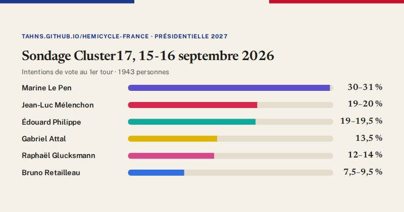

Présidentielle 2027 · sondage
Intentions de vote au 1er tour : Cluster17, enquête du 15-16 septembre 2026

| Candidat | Intentions de vote |
|---|---|
| Marine Le Pen | 30 à 31 % |
| Jean-Luc Mélenchon | 19 à 20 % |
| Édouard Philippe | 19 à 19,5 % |
| Gabriel Attal | 13,5 % |
| Raphaël Glucksmann | 12 à 14 % |
| Bruno Retailleau | 7,5 à 9,5 % |
| François Hollande | 7,5 % |
| David Lisnard | 5 % |
| Nicolas Dupont-Aignan | 3 à 4 % |
| Éric Zemmour | 3,5 % |
| Marine Tondelier | 2,5 à 3 % |
| Fabien Roussel | 2 à 3 % |
| Nathalie Arthaud | 0,5 à 1 % |